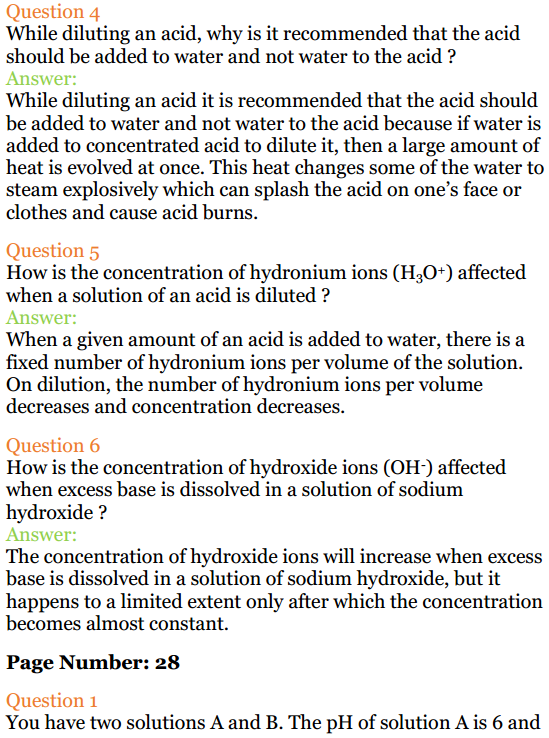
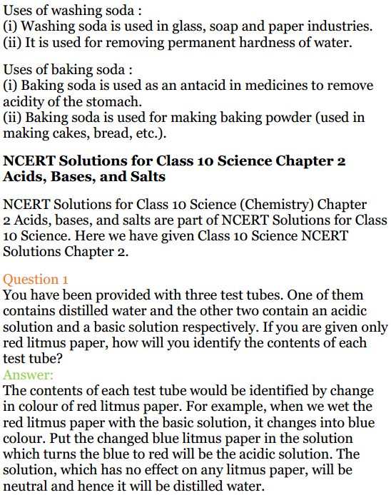
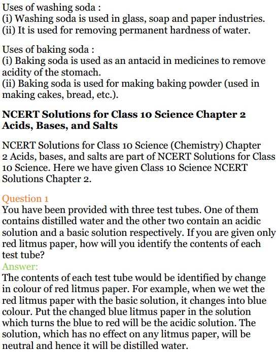

NCERT Solutions for Class 10 Science: National Council of Educational Research and Training (NCERT) is a self-governing organization of the Indian government that provides the curriculum for CBSE and some state board schools in India. So the candidates appearing for different board exams of Class 10 can refer to this NCERT Syllabus and prepare for their examinations which in turn helps candidates make a grade.
You can also Download NCERT Solutions for Class 10 Maths in Hindi to help you to revise complete Syllabus and score more marks in your examinations.
NCERT Solutions For Class 10 Science
Here is the chapter-wise NCERT Solutions for class 10 science in Hindi Medium and English Medium are listed below:
Chapter 1 Chemical Reactions and Equations
- Chemical Reactions and Equations
- रासायनिक अभिक्रियाएँ और समीकरण कक्षा 10 विज्ञान हिंदी में
- Class 10 Chemical Reactions and Equations Important Questions
- Chemical Reactions and Equations Class 10 Notes
- Chemical Reactions and Equations NCERT Exemplar Solutions
- Chemical Reactions and Equations Class 10 Extra Questions
Chapter 2 Acids Bases and Salts
- Acids, Bases, and Salts
- अम्ल, क्षार एवं लवण कक्षा 10 विज्ञान हिंदी में
- Class 10 Acids Bases and Salts Important Questions
- Acids Bases and Salts Class 10 Notes
- Acids Bases and Salts NCERT Exemplar Solutions
- Acids, Bases and Salts Class 10 Extra Questions
Chapter 3 Metals and Non-Metals
- Metals and Non-metals
- धातु और अधातु कक्षा 10 विज्ञान हिंदी में
- Class 10 Metals and Non-metals Important Questions
- Metals and Non-metals Class 10 Notes
- Metals and Non-metals NCERT Exemplar Solutions
- Metals and Non-metals Class 10 Extra Questions
Chapter 4 Carbon and Its Compounds
- Carbon and Its Compounds
- कार्बन और इसके यौगिक कक्षा 10 विज्ञान हिंदी में
- Class 10 Carbon and its Compounds Important Questions
- Carbon and its Compounds Class 10 Notes
- Carbon and its Compounds NCERT Exemplar Solutions
- Carbon and Its Compounds Class 10 Extra Questions
Chapter 5 Periodic Classification of Elements
- Periodic Classification of Elements
- तत्वों के आवर्त वर्गीकरण कक्षा 10 विज्ञान हिंदी में
- Class 10 Periodic Classification of Elements Important Questions
- Periodic Classification of Elements Class 10 Notes
- Periodic Classification of Elements NCERT Exemplar Solutions
- Periodic Classification of Elements Class 10 Extra Questions
Chapter 6 Life Process
- Life Processes
- जैव-प्रक्रम कक्षा 10 विज्ञान हिंदी में
- Class 10 Life Processes Important Questions
- Life Processes Class 10 Notes
- Life Processes NCERT Exemplar Solutions
- Life Processes Class 10 Extra Questions
Chapter 7 Control and Coordination
- Control and Coordination
- नियंत्रण एवं समन्वय कक्षा 10 विज्ञान हिंदी में
- Class 10 Control and Coordination Important Questions
- Control and Coordination Class 10 Notes
- Control and Coordination NCERT Exemplar Solutions
- Control and Coordination Class 10 Extra Questions
Move to Top of the page.
Chapter 8 How do Organisms Reproduce?
- How do Organisms Reproduce
- जीव जनन कैसे करते है कक्षा 10 विज्ञान हिंदी में
- Class 10 How do Organisms Reproduce Important Questions
- How do Organisms Reproduce Class 10 Notes
- How do Organisms Reproduce NCERT Exemplar Solutions
- How do Organisms Reproduce? Class 10 Extra Questions
Chapter 9 Heredity and Evolution
- Heredity and Evolution
- अनुवांशिकता एवं जैव विकास कक्षा 10 विज्ञान हिंदी में
- Class 10 Heredity and Evolution Important Questions
- Heredity and Evolution Class 10 Notes
- Heredity and Evolution NCERT Exemplar Solutions
- Heredity and Evolution Class 10 Extra Questions
Chapter 10 Light Reflection and Refraction
- Light Reflection and Refraction
- प्रकाश-परावर्तन एवं अपवर्तन कक्षा 10 विज्ञान हिंदी में
- Class 10 Light Reflection and Refraction Important Questions
- Light Reflection and Refraction Class 10 Notes
- Light Reflection and Refraction NCERT Exemplar Solutions
Chapter 11 Human Eye and Colourful World
- Human Eye and Colourful World
- मानव-नेत्र एवं रंगबिरंगी दुनियाँ कक्षा 10 विज्ञान हिंदी में
- Class 10 Human Eye and Colourful World Important Questions
- Human Eye and Colourful World Class 10 Notes
- Human Eye and Colourful World NCERT Exemplar Solutions
- Human Eye and Colourful World Class 10 Extra Questions
Move to Top of the page.
Chapter 12 Electricity
- Electricity
- विद्युत कक्षा 10 विज्ञान हिंदी में
- Class 10 Electricity Important Questions
- Electricity Class 10 Notes
- Electricity NCERT Exemplar Solutions
Chapter 13 Magnetic Effects of Electric Current
- Magnetic Effects of Electric Current
- विद्युत धारा का चुम्बकीय प्रभाव कक्षा 10 विज्ञान हिंदी में
- Class 10 Magnetic Effects of Electric Current Important Questions
- Magnetic Effects of Electric Current Class 10 Notes
- Magnetic Effects of Electric Current NCERT Exemplar Solutions
- Magnetic Effects of Electric Current Class 10 Extra Questions
Chapter 14 Sources of Energy
- Sources of Energy
- उर्जा के स्रोत कक्षा 10 विज्ञान हिंदी में
- Class 10 Sources of Energy Important Questions
- Sources of Energy Class 10 Notes
- Sources of Energy NCERT Exemplar Solutions
- Sources of Energy Class 10 Extra Questions
Chapter 15 Our Environment
- Our Environment
- हमारा पर्यावरण कक्षा 10 विज्ञान हिंदी में
- Class 10 Our Environment Important Questions
- Our Environment Class 10 Notes
- Our Environment NCERT Exemplar
- Our Environment Class 10 Extra Questions
Chapter 16 Management of Natural Resources
- Management of Natural Resources
- प्राकृतिक संसाधनों का प्रबंधन कक्षा 10 विज्ञान हिंदी में
- Class 10 Management of Natural Resources Important Questions
- Management of Natural Resources Class 10 Notes
- Management of Natural Resources NCERT Exemplar Solutions
Move to Top of the page.
NCERT Solutions for Class 10 Science involves concepts from biology, physics, and chemistry. Candidates must possess a detailed knowledge of the NCERT Solutions based on the syllabus to get the good results in the board exams. NCERT Science syllabus for Class 10 is designed to provide a strong foundation for various exams such as JEE, NEET, etc.
So, it is very much important for the students to understand the concepts involved in NCERT Class 10 Physics, NCERT Class 10 Chemistry and NCERT Class 10 Biology while learning to avoid any difficulty in later stages. These NCERT Class 10 Solutions of each chapter will almost represent your NCERT class 10 Science class notes, so read on for more updates on questions and answers.
NCERT Solutions For Class 10 Science Chapter 1
Chemical Reactions and Equations chapter explains the concepts related to chemical reactions and equations. Here, you will know different types of reactions taking place in the surrounding. Some important topics explained in this chapter are:
- Writing and balancing chemical equations
- Different types of chemical reactions
- Combination reaction
- Decomposition reaction
- Displacement reaction
- Double displacement reaction
- Effects of oxidation reactions in everyday life: Corrosion & Rancidity
NCERT Solutions For Class 10 Science Chapter 2
Acids, Bases and Salts chapter mainly explains the difference between acids, bases and salts. It also deals with various types of reactions related to these three forms of chemical compounds. Some important topics involved in this chapter are:
- Chemical properties of acids and bases
- Reaction between acids and bases
- Reactions of metal carbonates and metal hydrogen carbonates with acids
- Reaction of metallic oxides with acids
- Reaction of non-metallic oxide with base
- Acid or base in a water solution
- Determining the strengths of acid or base solutions
- Importance of pH in everyday life
- Nature and formation of different salts
- Chemicals from common salt
  

Move to Top of the page.
NCERT Solutions For Class 10 Science Chapter 3
All the aspects related to metals and non-metals like their physical/chemical properties, reactiveness and various chemical reactions. Important topics covered in this chapter are:
- Physical properties of metals and non-metals
- Chemical properties of metals and non-metals
- Reactions of metals and non-metals
- Occurrence and extraction of metals
- Corrosion and its prevention
NCERT Solutions For Class 10 Science Chapter 4
Carbon and its Compounds chapter describes various features of carbon element and different compounds formed by it. Give below are the main topics covered in class 10 Science Chapter 4:
- Bonding in Carbon
- Saturated and Unsaturated Carbon Compounds
- Homologous Series
- Nomenclature of carbon Compounds
- Chemical Properties of carbon Compounds
- Properties of some important carbon compounds: Ethanol and Ethanoic Acid
NCERT Solutions For Class 10 Science Chapter 5
Here students get to learn the carious concepts related to the classification of elements. Some major concepts discussed in this chapter are:
- Dobereiner’s Triads
- Newlands’ Law Of Octaves
- Mendeleev’s Periodic Table: Its merits and demerits
- The Modern Periodic Table
- Position of Elements in Modern Periodic Table
- Trends in the Modern Periodic Table
NCERT Solutions For Class 10 Science Chapter 6
Life Processes chapter deals with the various biological processes and reaction taking place in organisms. Some major topics covered in this chapter are:
- What are Life Process?
- Nutrition in Organisms: Autotrophic and Heterotrophic Nutrition
- How do organisms obtain their nutrition
- Nutrition in human beings: Respiration, Transportation and Excretion
- Excretion in human beings and Plants
NCERT Solutions For Class 10 Science Chapter 7
Control and Coordination chapter gives details of different ways in which organisms respond to the stimuli. Here you also get to know about the human nervous system, automatics and voluntary actions, exocrine and endocrine glands, etc. Practice following concepts before working on NCERT solutions:
- Nervous system of human beings
- Reflex actions and their path
- Action of nervous tissues
- Coordination In Plants
- Different ways in which plants respond to stimulus
- Action of different hormones in animals
NCERT Solutions For Class 10 Science Chapter 8
How do Organisms Reproduce chapter students get to learn different methods of reproduction in plants and animals and get aware of the various methods of birth control in humans. Some of the important topics discussed in this chapter are:
- Modes of asexual reproduction: Fission, Fragmentation, Regeneration, Budding, Vegetative propagation, Spore Formation
- Sexual reproduction and its significance
- Sexual reproduction in flowering plants
- Reproduction in Human Beings
- Reproductive systems in human male and female
- Process involved in fertilisation of egg
- Reproductive Health and different ways of birth control
NCERT Solutions For Class 10 Science Chapter 9
Heredity And Evolution chapter deals with the details related to heredity and evolution of different species. Darwin’s theory of evolution and natural selection are also discussed here. Go through the major topics mentioned below:
- Variations observed in different generations
- Heredity
- Rules for Inheritance of Traits
- Mendel’s experiments on expression of traits generation to generation
- Sex determination
- Evolution
- Acquired and Inherited Traits
- Speciation
- Tracing Evolutionary Relationships
- Human Evolution
NCERT Solutions For Class 10 Science Chapter 10
Light Reflection and Refraction explains the concepts of reflection and refraction of light. It also explains the Image formation by a plane mirror/curved mirrors and lenses. Some important topics to learn from this chapter are:
- Reflection of light
- Image formation by spherical mirrors
- Sign convention for reflection by spherical mirrors
- Mirror formula and magnification
- Refraction of Light
- Refraction through a rectangular glass slab
- Refractive index
- Refraction by spherical lenses
- Image formation by spherical lenses
- Sign Convention for refraction by spherical lenses
- Lens Formula and Magnification
- Power of Lens
NCERT Solutions For Class 10 Science Chapter 11
The Human Eye and Colorful World chapter students get to know each and every detail of the human eye from its structure to its working. Various defects of vision are also discussed here. It also explains atmospheric refraction and various phenomena related to it. Some major topics discussed in this chapter are:
- Structure and working of human eye
- Power of accommodation of human eye
- Defects of vision and their correction
- Refraction of light through a prism
- Dispersion of white light through a glass prism
- Atmospheric refraction and its effects
- Scattering of light (Tyndall Effect) and its applications in nature
NCERT Solutions For Class 10 Science Chapter 12
Electricity chapter explains electric current, its applications and various effects related to it. Go through the following major topics before starting with the NCERT questions and solutions:
- Introduction to electric current
- Potential difference
- Ohm’s law and its graphical representation
- Factors on which the Resistance of the conductor depends – Resistivity
- Resistors in series and parallel: Calculation of resultant resistance in the series, current and voltage across each resistor
- Advantage of parallel combination over the series combination
- Heating effects of electric circuit: Joule’s law of heating effect of electric current
- Electric fuse
- Power
NCERT Solutions For Class 10 Science Chapter 13
Magnetic Effects of Electric Current chapter is all about the magnetic field, field lines, field due to a current carrying conductor, AC and DC generator, Advantages of AC over DC and domestic electric circuits. NCERT Solutions for Class 10 Science Chapter 13 includes following major topics:
- Magnetic field and its representation as field lines
- Magnetic field due to current carrying conductor
- Magnetic field due to the current through a straight conductor
- Right-hand thumb rule
- Magnetic field due to a current through a circular loop
- Magnetic field due to a current in a solenoid
- Force on a current carrying conductor in a magnetic field
- Electric motor
- Electromagnetic induction
- Electric generator
- Domestic electric circuits
NCERT Solutions For Class 10 Science Chapter 14
Sources of Energy: Different forms of energy and their sources are discussed in this chapter. Some of the main topics explained in this chapter are:
- Ideal source of energy
- Conventional sources of energy: Fossil fuels, thermal power plant, hydro power plants
- Bio mass and wind energy as major energy resources
- Non-Conventional Sources of Energy: Solar Energy, Energy from Sea, Geothermal Energy, Nuclear Energy
- Renewable and non-renewable sources of energy and their availability in the long run
NCERT Solutions For Class 10 Science Chapter 15
Our Environment chapter deals with various components of environment components and how human activities are affecting the environment. Some of the main topics discussed in this chapter are:
- Eco system and its components
- Food chains and webs
- Ozone Layer and its depletion
- Managing the garbage we Produce
NCERT Solutions For Class 10 Science Chapter 16
Sustainable Management of Natural Resources chapter you get to know about the different natural resources, their advantages and conservation efforts. Here main focus should be laid on the following concepts:
- Natural resources and their management
- Management of forests and wild life
- Dams
- Water harvesting
- Management of fossil fuels; Coal and Petroleum
NCERT Class 10 Science Solutions Pdf
We have also created NCERT class 10 science solutions in PDF format. Click Here to download NCERT class 10 Science Solutions PDF.
FAQs for NCERT Solutions for Class 10 Science
1. Why do I choose NCERT Solutions for CBSE Class 10 Science?
NCERT Class 10 Science Solutions is the perfect guide for CBSE students during their board exam preparation. As it is created by qualified subject teachers as per the latest class 10 CBSE Science Syllabus. You can discover various solved and unsolved questions and exercises along with sample papers & important questions list for every concept on Class 10 NCERT Science Solutions, that aids you to prepare well for board exams.
2. Where can I get NCERT Solutions for Class 10th Science (Physics, Chemistry & Biology)?
LearnCBSE.in allows students to overcome their nightmares with NCERT Books Solutions for all sciences subjects like Physics, Chemistry & Biology for class 10. You can get them online at our website or else directly click on the quick links available on our page.
3. What is the price for NCERT Class 10 Science Solutions Textbooks?
Through our website, you can access NCERT Textbook Solutions for class 10 science for free of cost. So, download CBSE Class 10 Science NCERT Solutions PDF from our page and seek more knowledge of science concepts.
4. What is best for NCERT solutions for class 10 science?
By preparing with NCERT Solutions for science exams provide you various benefits like Important questions, solved and unsolved exercises for each concept, MCQ questions for class 10 board exams, One-word Answers, Assertions, Repetitive questions, previous papers, and many more that help students to score good grades in the preboard and board exams.
5. How can I study science in class 10?
Read & Practice all the concepts of science with NCERT Science Solutions books thoroughly while your exam preparation. Also, solve the previous year question papers of class 10 CBSE science board exams by using NCERT Textbook Solutions for Class 10 Science. NCERT Science Solutions provide a detailed analysis of the curriculum and topics which helps class 10 students to study science in a simple way.
6. How many chapters are there in class 10 science NCERT Books?
With a total of 16 Chapters are contained in the latest class 10 Science syllabus, NCERT Solutions for class 10 science is the best resource to understand all 16 chapters easily. So, download Science NCERT class 10 Solutions of your choice from the quick links available on our page and give your exam preparation a perfect shape with a subject expert’s guidance.
Now that you are provided all the necessary details regarding NCERT Solutions for class 10 Science and we hope this detailed article on NCERT Solutions for Class 10 Science is helpful. If you have any query regarding this article or NCERT Solutions for Class 10 Science, leave your comments in the comment section below and we will get back to you as soon possible.